ELS's Viewer's Basic Features

Model Navigation
ELS's Viewer is a state-of-the-art graphical user interface that enables you to view structural models with realistic appearance and behavior simulating complex states and loads in an eye-friendly presentation which makes it easier to follow up the structural behavior based on the produced results.
Pan
Zoom
3D Views
The different viewing directions are defined relative to the global axes: Front and Back for the Y-axis, Right and Left for the X-axis, and Top and Bottom for the Z-axis.
- Isometric ()
- Front ( )
- Back ()
- Right ()
- Left ( )
- Top ( )
- Bottom ()
You can select the required view by clicking the corresponding button either from the 3D View toolbar or from View >3D View.
Note that when any of these views is selected,
all panning and zooming performed is reset.
Other than the preset 3D view directions,
you can customize the viewing direction by dynamically rotating the model in space using commands that rotate it about the X-axis (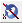 ),
Y-axis ( ), and Z-axis ( ). Clicking on any of these buttons causes the mouse cursor to change its shape in the model viewer window to indicate activation of a rotation mode.
To rotate the model, move your mouse around while pressing the left-button. Press the *Esc* key or Cancel Navigation from the right-click menu when you are done
to exit the rotation mode.
If you need a more flexible 3D view rotation tool, you can use the Rotate About XYZ ( ) option which enables you to rotate the model around the origin, not just one axis.
In addition to rotating the model relative to the global axes, you can rotate the model relative to the plane of your screen, about the X-axis ( ),
Y-axis ( ), and Z-axis ( 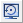).
For more flexible 3D rotation about the screen, you can use the Arc Ball Rotate option ( ).
For more 3D viewing options, use the Walkthrough mode.
Note: Although the Rotate About XYZ tool is more flexible, it needs more experience to control.
It is advisable to use it after trying out the single-axis rotations just to tweak the view to your exact viewing preference.
Select
In some cases you'll be needing to select objects; these cases include:
- To view detailed properties of an element or spring in the Properties browser (only possible for a single selected object). In case of markers, you can view and also edit properties of multiple selections at once.
- To show or hide a group of selected elements.
- To view staining actions details at a selected component section. This is done by selecting a section then choosing Component Straining Actions Details from the right-click menu. For more information on this feature refer to Chapter 10.
- To perform some commands in ELS like creating custom components or charts, you will be required to make selections. For example, to plot a chart, you will be requested to select the elements whose data will be plotted.
You can select any of the following types in ELS: elements ( ), springs ( 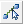 ), sections ( 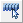 ), markers ( 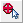 ), or contact ( ).To select an object you must first make sure that it is displayed, or else its selection button will be disabled. To display a type of objects use the Problem Features menu or toolbar (see Chapter 6 for more details). Note that you can only select objects of one type at a time. The action of selection itself is simply done by clicking an element if a single selection is required. If you need to make multiple selections, click the mouse and drag it to draw a window over the desired elements, or keep the Ctrl (or Shift) key pressed while selecting elements to add them to the existing selection. Clicking a selected element deselects it.
When making a window selection, you should note that all elements within this window, including those hidden behind other elements will be selected.
Figure shows an example of a slab selected from the top view. If it is selected by single selection,
i.e. select elements one by one by clicking them, just the elements visible from the top are actually selected.
If all the elements of the slab are selected using a window, all other slabs beneath it will also be selected.
There are ways to select such a slab using window selection, which will save time compared to selecting all its elements one by one. One way to do that is by hiding all other levels using the Structure browser before making the selection, so that there are no elements below the slab. Another way is to hide all columns and girders then select the slab from the front view. Besides making selections using the mouse, you can make precise selections of elements by specifying their ID numbers in the Selection Range dialog box shown in Figure 4-4 which you can access from the Select menu. This dialog box lets you select elements or springs within a specified range.
Display
What if you have a huge model and you want to view only a part of it without affecting the whole model? What if you want a customized theme to help ensure you're comfy enough with the interface to get the most out of ELS? Welcome on board! You're at the right place to learn how to customize your whole experience with ELS's results viewer.
Clipping
Clipping is an option that helps you view elements of your model that are normally hidden behind others. It does so by clipping or trimming the elements obstructing their view. It can also be considered a tool for viewing cross-sections of your model from different directions. You can access clipping options from the View menu or the main viewer window right-click menu or by clicking the Clipping button (Top left of the Viewer's Workspace).
There are two types of clipping in ELS's Viewer:
Volume clipping
Selectively creates the section cuts using a virtual cutting cube that is specified by 2 of its diagonally opposite vertices. Ticking it activates volume clipping.
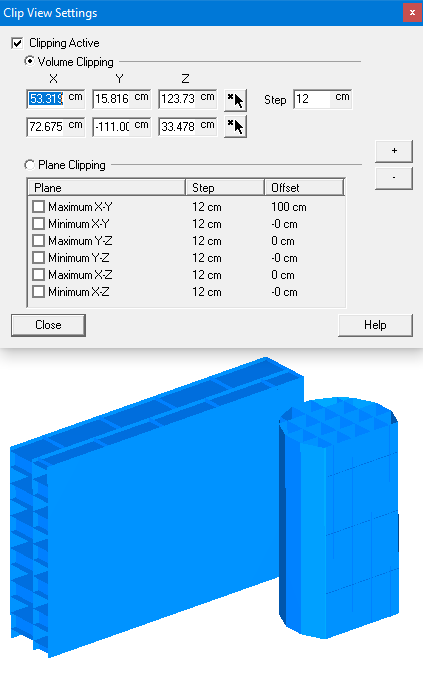Plane clipping
Selectively creates the section cuts using virtual cutting plane(s). Ticking it activates plane clipping.
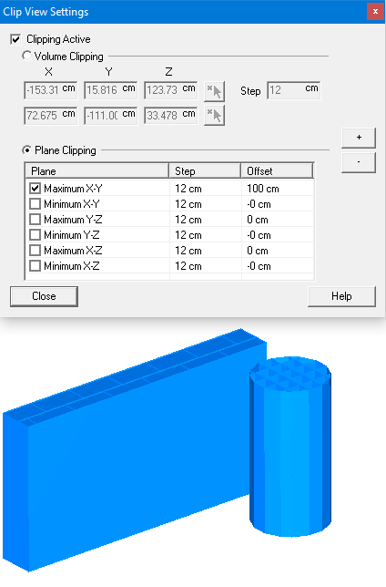
Finally, to remove the applied clipping, whether plane or volume, un-tick *Clipping Active* .
Walkthrough
The walkthrough mode enables you to navigate your 3D structure as if you are “walking” around it or even through it. To activate the walkthrough mode, click the button on the View toolbar or select Tools> Walkthrough. In this mode, no panning or zooming is possible. Instead, you can change your standing position around the structure by using the (Shift), (Page Up), (Page Down), and arrow keys. You can move around, change the direction in which you are looking, descend, or ascend by using the key combinations.
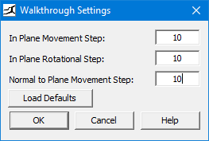
Light Settings
When viewing a 3D model, light settings can have dramatic effects on the way it appears. When properly used, it can help you obtain the best and clearest view of your structural model. ELS gives you complete control on the light sources around your model using the Light Settings dialog box. You can open this dialog box by clicking the button on the View Settings toolbar or selecting Light Settings from the Tools menu.
The lighting color is further divided into three parts :
Ambience
Represents how the model reflects light which is falling at it from all directions uniformly,
as if modeling light from the sky.
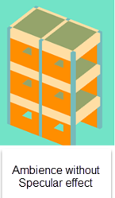
Specular
Represents how the model reflects light which is falling at it from a point source. This type of reflection is what best defines the 3D shape of a model. 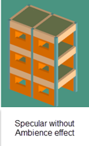
Position
Represents the position of the light source.
Color Settings
In ELS you can color the objects appearing inside the viewer window according to your taste:
-
To color just one slab or girder, not all of them,
you can do so by using the Properties browser.(Type Color)
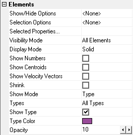 - To color non-structural objects (as boundaries, springs, and viewer background) or indicators (as element centroid and velocity vectors), use the Color Settings dialog box by clicking the button ( ) or by selecting Color Settings from the Tools menu.
- To set the colors of the various materials available in your project, you can use the Material Types dialog box by selecting Material Types Browser and double-clicking any material type from the tree. The change applies to all objects that use this material. 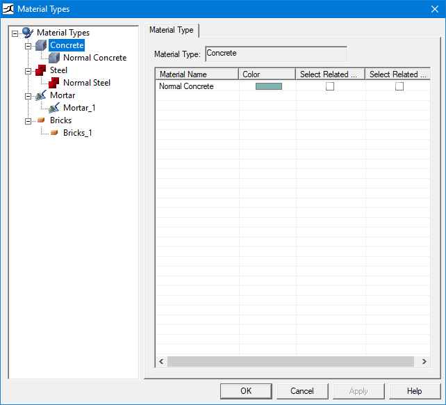
Drawing Size
In ELS's Viewer, you cannot change the dimensions of structural components,
as it is just a viewer reflecting the results of a model created by the modeler.
However, you can change the dimensions of visual indicators for springs, contacts, cracks, etc.
For example, if you feel that element centroids are too small or that matrix springs are too large,
you can change their drawing sizes (their apparent sizes) by using the Drawing Size Settings
dialog box of the Tools menu
You can change the drawing size of any object by typing a number
(percentage of the default size) in its corresponding Value (%) cell.
Indicators are drawn with sizes relative to the average problem element dimensions or
to the element to which they belong. For example:
- Contacts' sizes are relative to the overall average model size since they do not speak for just one element.
- Springs' lengths are relative to their respective element dimensions.
The number in the Average Element Radius text box is the value to which all dimensions in the dialog are related. This value is not editable.
Camera Manager
ELS Results Viewer enables you to move through the structure to select a certain scene at a certain frame.
With Camera manager, you can see the interior parts of the structural components.
You can change the camera position along with the camera's angle (horizontal and vertical).
In addition to that, you can explore hidden interior Contours created for structural components through
the camera manger option.
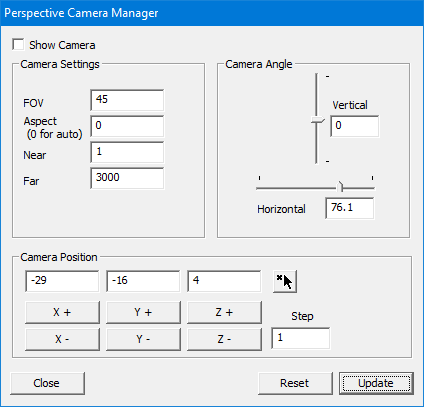
Check the activate option then you can change the Horizontal and vertical camera angles
and also change the camera position to move through the structure.
Objects' Settings
Elements
When defining a problem in ELS, structural components are broken into smaller building blocks referred to as matrix springs or mesh elements & here we're discussing the different display modes and options that can be performed on these elements.
Elements' View Modes
ELS enables you to choose which element(s) material(s), object(s) type and at which level(s) to show/hide. In addition to that, ELS has 3 different rendering modes to view elements in : Solid , Shrink , or Wireframe:
- In the Solid mode, all surfaces are rendered and colored.
- In the Wireframe mode, only the outer frames of elements are displayed without the surfaces being rendered. 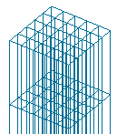
- In the Shrink (Elements) mode, individual elements are virtually separated but without sacrificing their solid look. This is done by drawing elements at 90 % of their original size, hence emphasizing the interfaces between elements. 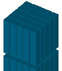
Note that: It is possible to activate both the Shrink & the Wireframe modes together.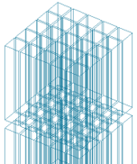
While the Solid mode enables you to better visualize the structure:
- The Wireframe mode enables you to see elements that are normally hidden behind other elements; it does this without hiding the elements obstructing the view.
- The Wireframe mode also makes it easy to differentiate between individual elements and adjacent ones, something that is not possible in solid mode.
You can select the element display mode from:
- The Problem Features menu. 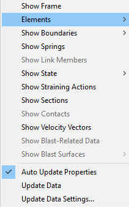 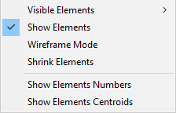
- The buttons on of toolbar: ( 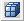 )toggles between solid and wireframe modes, while ( )toggles between shrink and normal size modes or use Show elements dialog.
Elements' Opacity
You can set the Opacity option for clear the view from the Property of the selected object. The opacity ranges from 1 to 10: ( 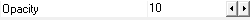 )
- (1) means it will appear totally transparent.
- (10) means that the object will appear totally opaque.
Elements' IDs
Every element is given a unique ID number in ELS which can be displayed by clicking the button. ( 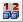 )
Elements' Centroids
To view just all the elements' centroids click the button on the Problem Features toolbar or check them from the Show Elements.( 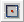 )
Elements' Visibility
You can toggle the display of all elements on or off, view outer elements, or outer surfaces from the Problem Features menu or by clicking the arrow beside the button in the Problem Features toolbar or Show Elements Dialog.
Elements' Color
While it is not possible to change the color of an individual element, you can set the color with all the display modes for an individual structural component or all components of a specific type by using the Structure browser.
Springs & Link Members
Springs are generated by ELS's Solver as part of the AEM (Applied Element Method). There are three types of springs: matrix, steel, and RFT springs. They are not displayed by default as they normally exist in large numbers and viewing them requires large processing power.
You can show or hide springs:
- From the Problem Features menu.
- From their display button which opens the Show/hide Springs Settings dialog then, from the Springs Materials Settings and levels, check which springs to show.
- From the right click menu of Structure Browser, select which type of springs to show.
Link Members
Link members on the other hand, are displayed by default and can be hidden by de-selecting the option from the right-click menu of the Structure browser.
Springs' Visual Properties
Link members on the other hand, are displayed by default and can be hidden by de-selecting the option from the right-click menu of the Structure browser.
Changing the colors and drawing size of springs can be performed from the Material tree or from the Structure browser Spring tab. Also, the drawing sizes can be changed from the properties of the object (Properties Browser)Boundaries
Boundaries are surfaces within the simulation that are used to confine the movement of elements in the analysis to a more realistic setting. For example, the ground on which a structure is built is usually modeled as a bottom boundary.
The use of boundaries reduces the analysis time and optimizes your results. While they are only set when defining a problem in ELS's Modeler, in ELS's Viewer, you can still change their display settings.
- To change boundaries' colors or transparencies, use the Color Settings.
- To show or hide any boundary, use the Problem Features menu or Boundaries toolbar to toggle the display of all ( 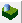 ), front(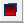), back(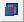), left (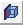), right (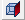), top ( 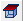 ), bottom ( 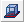 ), and irregular ( ), boundaries and wire frame mode ( 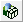 ).
Markers
ELS's Viewer enables you to insert markers in exported bitmap and AVI files. You can use such markers to indicate important events or to display information during video playback.
Markers' Types
There are three types of markers:
Symbol, Text, & Image.
Symbol Markers
They are available in six different shapes: Circle( ), Diamond ( ), Square ( ), Cross( ), Plus Sign ( ), and Triangle ( ).
Text & Image Markers
As their names imply, they enable you to use text and figures as markers.
Clicking the Insert Text Marker button ( ) opens a dialog box which prompts you for the text to display, and clicking the Insert Image Marker button ( ) opens a dialog box to choose the image file to insert as a marker.
You can change the color and rotation of a marker, together with other
properties in one of two ways, using the Markers browser or Properties browser.
To use the Properties browser for that purpose, you will have to select the markers first by using the Select Markers button ().
You can select multiple markers and change their properties all at once by using the Properties browser.
The other method of editing marker properties is using the Markers browser. Some marker properties are common between all types and others are type-specific.
Markers' Properties
| Property | Description | Notes |
|---|---|---|
| Name | Displays marker name | These properties cannot be changed. |
| Layer | Displays the layer to which the marker belongs. | |
| Shape | Displays the marker type. | |
| Color | Enables you to change the marker color. | These properties exist for all marker types, and can be changed from both Properties and Markers browsers. |
| Scale | Enables you to change the marker size. | |
| From | Frame number at which marker starts to appear. | |
| To | Frame number at which marker ceases to appear.. | |
| X,Y | Coordinates of the marker location on the screen, with (0,0) being the top-left of the screen. To move the marker to a new position without having to enter the coordinates explicitly, click the () button inside the X,Y field in the Properties browser. | |
| Rotation | Enables you to rotate the marker by typing the rotation angle in degrees. | |
| Text | Enables you to edit the marker text. | These properties exist only for text markers, and can be changed from the Properties browser only. |
| Font | Enables you to change the text font in use. | |
| Image | Displays the path of the source image file. | These properties exist only for image markers, and can be changed from the Properties browser only. |
| Width | Displays the image width. | |
| Height | Displays the image height. | |
| Background color | Sets the background of the image. |